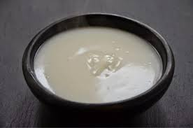

Description
Hausa Koko is a beloved traditional breakfast dish in many West African countries, particularly in Ghana and Nigeria. It's a spiced porridge made from fermented millet, known for its creamy texture and distinctive flavor. The combination of ground ginger, cloves, and black pepper gives Hausa Koko its unique and aromatic spice profile, which is both invigorating and comforting.
The porridge is typically enjoyed in the morning, providing a warm and filling start to the day. Its versatility allows for various sweeteners, like sugar or honey, and it can be served with or without milk, catering to different dietary preferences. Hausa Koko is not just a meal; it's a cultural experience, offering a taste of West African culinary heritage.
This porridge is especially popular during Ramadan and other festive occasions, symbolizing communal harmony and hospitality. Whether you're seeking a taste of West African cuisine or simply a comforting and nutritious breakfast option, Hausa Koko offers a delightful experience that warms the heart and nourishes the body.
- 2 cups of millet flour
- 4 cups of water
- 1 tablespoon ground ginger
- 1 teaspoon ground cloves
- 1 teaspoon ground black pepper
- Sugar or honey to taste
- Optional: Milk or a dairy-free alternative for serving
- Begin by sifting the millet flour into a large bowl to remove any lumps. This step is crucial for achieving a smooth texture in your porridge.
- Gradually add water to the millet flour while stirring continuously. Ensure the mixture is smooth and free of lumps. The consistency should be somewhat thin, as it will thicken when cooked.
- Incorporate the ground ginger, ground cloves, and ground black pepper into the mixture. These spices are essential for giving Hausa Koko its signature warm and slightly spicy flavor.
- Pour the mixture into a large pot and cook over medium heat. Stir constantly to prevent the porridge from sticking to the bottom of the pot and to avoid lumps forming.
- As the mixture heats, it will begin to thicken. Reduce the heat to low and continue to stir regularly. Cook for about 20-30 minutes, or until the porridge reaches your desired consistency.
- Once cooked, remove from heat. Add sugar or honey to your taste, stirring well to blend.
- Serve hot, either plain or with a splash of milk or a dairy-free alternative. Hausa Koko is typically enjoyed for breakfast and can be accompanied by bread, koose (bean cakes), or other local favorites.
Back to main page